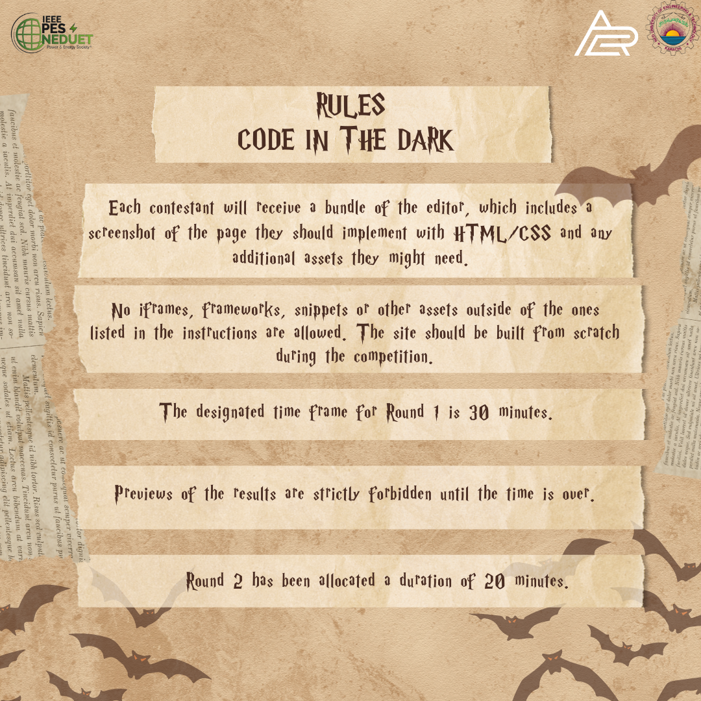

--- The rules ---
1) No previews - of either results or assets!
2) Stay in this editor at all times
3) No measurement tools
4) Stop coding when the time's up
5) After the round is over, press "Finish" and follow the prompt instructions to see your results
6) Total time to complete round 2 is 20 minutes
Good luck and most important of all; have fun!
--- Assets ---
./pic1.jpeg (Book with wand)
./pic2.jpeg (Owl)
./pic3.jpeg (Castle)
./pic4.jpeg (Thread ball, pumpkin, Notebook)
./pic5.jpeg (Books)
--- Colors ---
blue: #040465